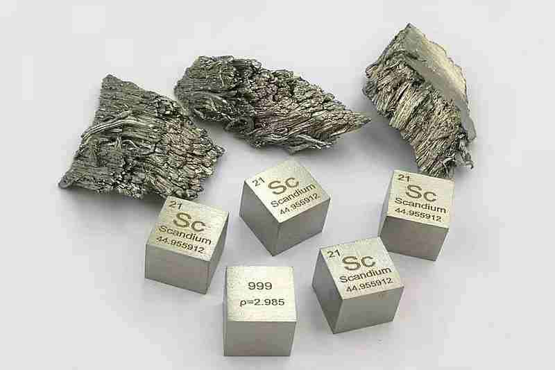
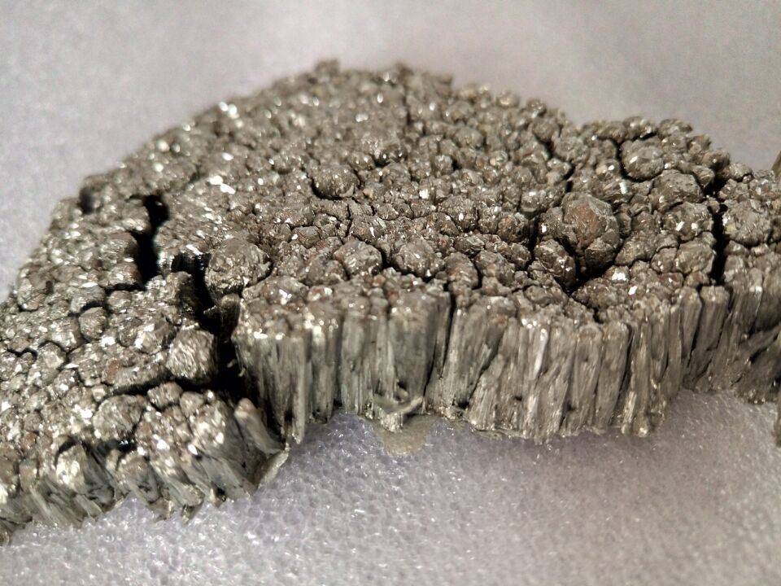

Скандий
Ска́ндий (химический символ — Sc, от лат. Scandium) — химический элемент 3-й группы (по устаревшей классификации — побочной подгруппы третьей группы, IIIB) четвёртого периода периодической системы химических элементов Д. И. Менделеева, с атомным номером 21. Простое вещество скандий — лёгкий переходный редкоземельный металл серебристого цвета с характерным жёлтым отливом. Существует в двух кристаллических модификациях: α-Sc с гексагональной решёткой типа магния, β-Sc с кубической объёмноцентрированной решёткой, температура перехода α↔β 1336 °C

Существование скандия предсказал Д. И. Менделеев в 1870 г.; элемент открыт шведским химиком Л. Ф. Нильсоном в 1879 г.; название произошло от лат. Scandia – Скандинавия.
По химическим свойствам близок к алюминию и РЗЭ, высокоактивен, на воздухе покрывается тонкой плёнкой оксида, при нагревании окисляется до Sc2O3, с Н2 образует гидрид ScHx (x⩽2), c N2 – нитрид ScN, c галогенами и галогеноводородами – тригалогениды. Легко взаимодействует с минеральными кислотами (кроме HF); со многими металлами образует сплавы и интерметаллиды.
Скандий применяют в основном для легирования сплавов на основе Al, используемых в авиастроении, ракетостроении и для деталей космических аппаратов. Дисперсные Al3Sc, Al3(Sc,Zr), введённые в Al (0,1–0,5 % Sc), улучшают структуру зёрен, повышают термическую устойчивость сплава и позволяют проводить его сварку. Из сплавов изготавливают спортивный инвентарь. Добавки ScI3 повышают эффективность мощных ртутных ламп.

Скандий присутствует в галогеновых лампах. Именно он обеспечивает им спектр излучения, сходный с солнечным. Считается, что светодиоды сегодня вытесняют такие лампы с рынка. А вот в лазерах скандий прочно занял свое место: его добавляют в состав иттрий-галиевых гранатов — основы современных твердотельных лазеров. В частности, на иттрий-скандий-галлиевом гранате созданы медицинские лазеры. Например, ими пытаются лечить кариес и омолаживать кожу лица.